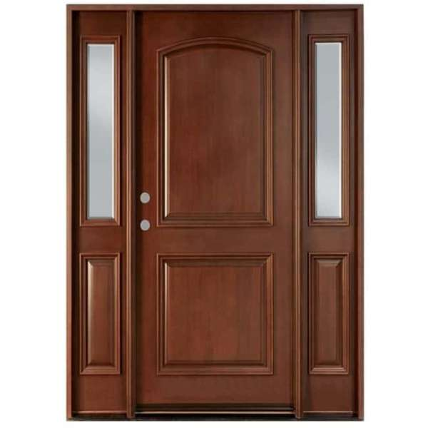
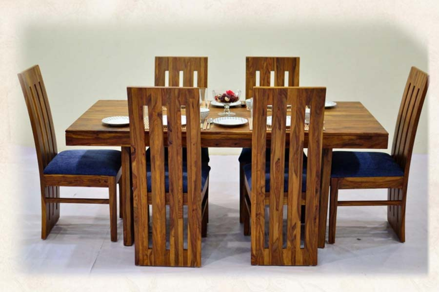
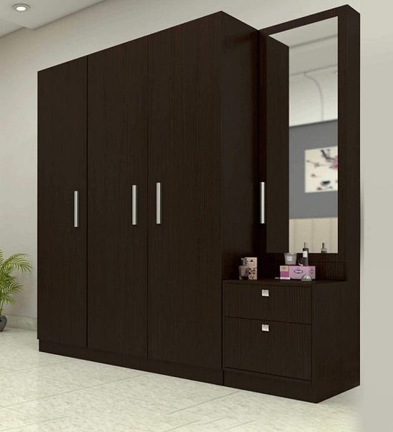

Mangal Singh Timberworks and Sawmills have been in the carpentry and crafting industry since the early 1950. Therefore, we are highly renowned for our furniture and our timber. The timber from our sawmill is not only consumed for the purpose of manufacture of the furniture we sell,
but also is sold to the other parties which require timber and wood as a raw material. Our timber is our primary product, which is sent to places so far as Delhi. Besides that, we also manufacture furniture, you can buy readymade furniture to enhance your houses or you might even get
custom furniture built by citing all your rwquirements. Our highly skilled carpenters and craftsmen will leave no stone unturned to create the product adhering to the specifications. The products that you can find with us are dining tables, sofa sets, study tables, chairs and
coffee tables among many more. You can view some samples of the products offered as you scroll down.

Door Frames
High quality wooden door frames can be manufactured as per the customer specifications. We provide proper finishing and polishing facilities too.
Kitchen Cabinets
Wooden kitchen cabinets are manufactured according to the dimensions of the place and the customer requirements. All the customer feedbacks are carefully taken into heed while preparing. We even provide the raw materials required, like wood, ply, etc., for the same at highly reasonable costs.

Dining tables
Highly durable and modern minimalistic dining table sets are available. We provide for the services of manufacturing custom dining table sets if the customer demands.
Window Frames
Highly durable and modern minimalistic designs of window frames are manufactured catering to the customer requirements.
Sofa Sets
Various designs, traditional and modern are available. The customers can either choose from the available options or even get it manufactured according to their requirements.

Wardrobes
Various designs in the wardrobes, almirahs , both traditional and modern are available. The customers can either choose from the available options or even get it manufactured according to their requirements.
Study Tables
Variety of study table and chairs are available to choose from, the customers can choose according to the interior and decor of their rooms. The customers can either choose from the available options or even get it manufactured according to their requirements.
Coffee Tables
Variety of coffee tables are available to choose from, the customers can choose according to the interior and decor of their rooms. The customers can either choose from the available options or even get it manufactured according to their requirements.